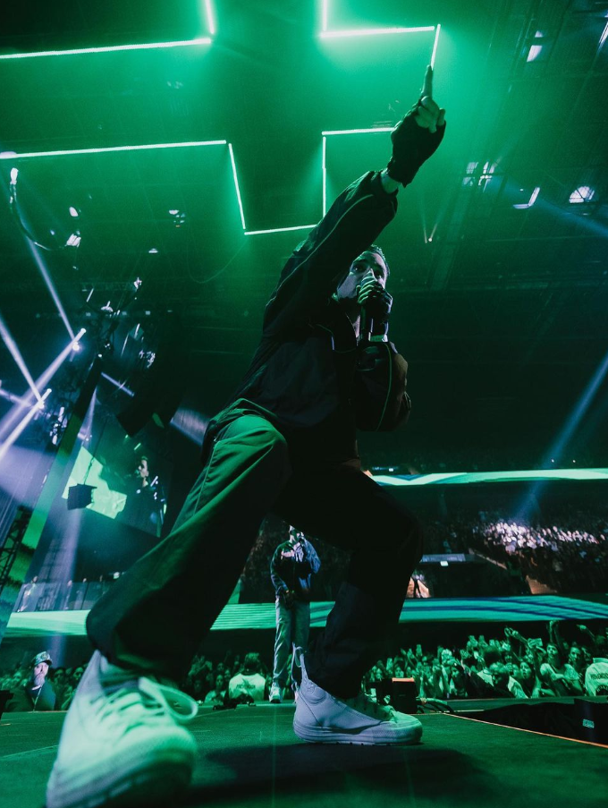

broke carrey
Biografia
broke carrey es un artista musical argentino, su verdadero nombres es Manuel Montenegro, forma parte de una crew llamada RipGang junto a otros artistas como Dillom, Saramalacara, ODDMAMI, entre otros.
Cuenta con diversos temas que se han hecho populares en la escena.
Canciones
Algunos temas de los que saco son: